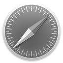

安装
你可以得到它 npm.
npm install ngclipboard --save或 bower, too.
bower install ngclipboard --save如果你不进入包管理，只是 下载 ZIP 文件.
安装程序
第一，包括AngularJS和clipboard.js插入您的文档.
<script src="//ajax.c2cmalls.com/ajax/libs/angularjs/1.3.14/angular.min.js"></script>
<script src="https://cdn.rawgit.com/zenorocha/clipboard.js/master/dist/clipboard.min.js"></script>然后包括 ngclipboard.js.
<script src="dist/ngclipboard.min.js"></script>添加 ngclipboard 对你的模块的依赖
var myApp = angular.module('app', ['ngclipboard']);最后，添加 ngclipboard指令需要的HTML元素.
<button class="btn" ngclipboard data-clipboard-text="只是因为你可以不意味着你应该 — clipboard.js">
复制到剪贴板
</button>使用
我们生活在一个 声明式的文艺复兴, 这就是为什么我们决定利用 HTML5 数据属性 为更好的可用性.
从另一个元素复制文本
一个常见的用例是从另一个元素复制内容。你可以通过添加一个data-clipboard-target 在你的触发元素的属性.
在这个属性中包含的值需要匹配另一个元素选择器.
<!-- 目标 -->
<input id="foo" value="https://github.com/sachinchoolur/ngclipboard.git">
<!-- 触发 -->
<button class="btn" ngclipboard data-clipboard-target="#foo">
<img src="assets/clippy.svg" alt="复制到剪贴板">
</button>把文字从另一个元t
此外，您可以定义一个data-clipboard-action 属性指定如果你想 copy 或 cut 内容.
如果你omit属性。, copy将默认使用.
<!-- 目标 -->
<textarea id="bar">Mussum ipsum cacilds...</textarea>
<!-- 触发 -->
<button class="btn" ngclipboard data-clipboard-action="cut" data-clipboard-target="#bar">
切到剪贴板
</button>正如你可能期望 cut 行动只适用于 <input> 或 <textarea> 元素.
从属性复制文本
事实上，你甚至不需要另一个元素来复制它的内容。你可以只包括一个 data-clipboard-text 在你的触发元素的属性.
<!-- 触发 -->
<button class="btn" ngclipboard data-clipboard-text="只是因为你可以不意味着你应该 — clipboard.js">
复制到剪贴板
</button>事件
有一些情况下，你想显示一些用户反馈或捕获什么已被选中后的复制/切割操作.
这就是为什么我们射击自定义事件，如 success 和 error 为您监听和实现您的自定义逻辑.
ngclipboard为您提供了两个属性叫做 ngclipboard-success 和ngclipboard-error 要侦听剪贴板事件并实现您的自定义逻辑.
<button class="btn" ngclipboard ngclipboard-success="onSuccess(e);" ngclipboard-error="onError(e);" data-clipboard-text="只是因为你可以不意味着你应该 — clipboard.js">
复制到剪贴板
</button>
//你仍然可以访问clipboard.js事件
$scope.onSuccess = function(e) {
console.info('Action:', e.action);
console.info('Text:', e.text);
console.info('Trigger:', e.trigger);
e.clearSelection();
};
$scope.onError = function(e) {
console.error('Action:', e.action);
console.error('Trigger:', e.trigger);
}
一个现场演示，只打开你的控制台 :)
浏览器支持
这个库依赖于两个 选择 和 exec命令 API。第二个在下面的浏览器中支持.
-

Chrome 42+
-

Firefox 41+
-

IE 9+
-
Opera 29+
-

Safari ✘
虽然复制/切割操作 exec命令 不支持Safari吗（包括手机），它优雅地降低因为 Selection 支持.
这意味着你可以显示一个提示说 Copied! when success事件被调用和 Press Ctrl+C to copy 里面 error事件被调用，因为文本已被选中.
一个现场演示，在Safari中打开这个网站.
其他项目
-
lightGallery
一个可定制的，模块化的，反应灵敏，灯箱画廊插件.
-
lightSlider
一个轻量级的响应内容滑块与传送带缩略图导航
-
Angular-flash
一个简单的轻量级的闪存消息模块 angularjs
-
Ladda-angular
该按钮的指令angularjs.
-
Teamwave
业务应用集成套件。（不是一个开源项目，但免费为第1000公司！）